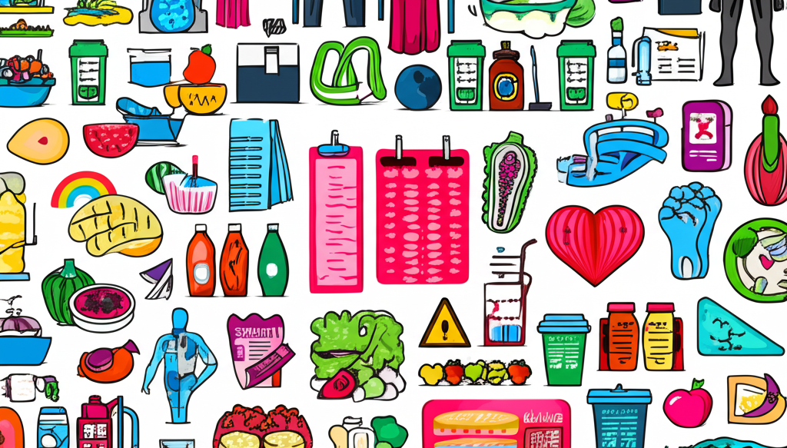

今天的新聞報導涵蓋了廣泛的主題，從最新的科技趨勢到全球的健康議題，再到車輛工業的發展。特別值得關注的是，體重管理和相關的健康問題成為了多個新聞的焦點，顯示出社會對健康的日益重視。同時，科技新聞則關注了產業的發展趨勢。讓我們一起深入了解今天的主要新聞內容。
TechNews 科技新報： 作為專注於資訊科技、能源、半導體、行動運算、網際網路、醫療、生物科技等領域的網路媒體，TechNews 提供了關於各種產業和新科技的趨勢、內幕與新聞。對於關注科技產業發展的讀者來說，是一個重要的資訊來源。
台灣區車輛工業同業公會： 關注車輛工業的讀者可以從這個網站獲取產業新聞，例如先進煞車系統介紹與控制技術。
印度的「大肚腩」：從身份象徵到沉默健康殺手 - BBC News 中文： 這篇文章揭示了在印度，腹部脂肪與二型糖尿病和心臟病等慢性疾病之間的關聯。提醒人們重視腹部脂肪對健康的潛在危害。
川普滴酒不沾、不抽菸健檢結果醫師驚艷僅1點需留意| 編輯精選| 生活 ...： 報導提到美國前總統川普的健檢結果，雖然整體健康狀況良好，但體重管理仍需注意。
差點截肢！糖友驚見鞋子滲血竟是嚴重糖尿病足潰瘍： 這則新聞講述了糖尿病患者因糖尿病足潰瘍面臨截肢風險的案例，再次強調了糖尿病患者足部護理的重要性。
山東已有803家醫療機構開設了健康體重管理門診： 這則新聞顯示了中國山東省對於體重管理問題的重視，並積極推進醫療機構開設相關門診。
“健康體重管理”进校园|健康体重|实验小学|教育|江苏省|科学_手机网易网： 這則新聞顯示了體重管理的意識正在向下紮根，進入校園，從小培養健康的飲食和生活習慣。
国家卫生健康委员会2025年4月14日新闻发布会文字实录_上级要闻_ ...： 新聞稿提到健康體重管理成為了社會熱議的焦點，顯示了官方對於這個議題的重視。
中医谈健康体重管理：从吃、动、养3个方面入手|体重管理年|健康 ...： 中醫的角度出發，提供關於體重管理的建議，包括飲食、運動和生活習慣的調整。
嘉基訊息： 嘉義基督教醫院在體重管理方面獲得肯定，顯示了醫院在健康促進方面的努力。
由於新聞發布的時間各不相同，讀者在閱讀時需要注意時間戳記，以確保獲取最新的資訊。 同時，不同的媒體來源可能會有不同的報導角度，建議參考多方資訊，以獲得更全面的了解。
今天的新聞重點涵蓋了科技、健康等多個領域。特別是關於體重管理和相關健康問題的報導，提醒我們要重視健康，並採取積極的措施來維持健康的體重。 此外，科技產業的持續發展也值得我們關注。 透過閱讀不同的新聞來源，我們可以更全面地了解社會的發展趨勢。